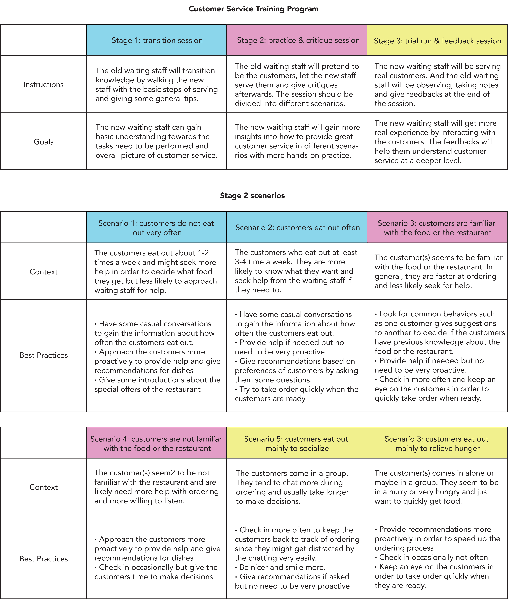

TASK
Use 3 methods (field study, interview, survey) to gain insights about the specific research topic. I chose to research the ordering experience in restaurants.
GOALS
I want to understand user behaviors and needs, pinpoint key problems, communicate key findings and suggest potential design improvements.
FIELD STUDY
Data Collection
I conducted 3 one-hour long observation sessions in 3 different restaurants and recorded both qualitative and quantitative data on laptop when blending in as a customer.

Data Analysis
I used Google Keep for the affinity diagram and I marked notes from different restaurants in different colors to provide context.
Key findings
■ Someone is usually more knowledgeable about the restaurant
■ The waiter or the waitress plays an important role in ordering
■ Being in a small or big group may or may not make a difference in ordering
INTERVIEW
Data Collection
■ Pilot interview with critiques
■ Adjusted the interview questions to encourage more storytelling
■ 4 phone interviews including 1 food service worker
Data Analysis
I analyzed the qualitative data similarly by using affinity diagram.
Key findings
■ The purpose of the dining affects the ordering process dramatically
■ Familiarity with the food significantly influences ordering process
■ Customer service plays an unexpectedly crucial role in ordering and restaurant experience
SURVEY
Data Collection
■ Survey divided into 2 sections: one for eaters and the other for waiting staff
■ 23 online responses in total including 20 eaters and 3 waiting staff
■ Use multiple choice grid that lets people rank importance of different factors
Data Analysis
■ I converted answers into numbers (such as "always" to "5" and "never" to "1")
■ I used Excel to find correlations among answers for different questions.
■ Overall this process is very labor and time intensive, but fun.
Key findings
When people eat out for different purposes (relieve hunger or socialize), the interaction with the waiting staff and expectations towards the waiting staff vary.
When people eat out less frequently, they are more likely to rely on other resources to help them pick dishes besides asking recommendations from the waiting staff.
When people eat out less frequently, they have higher expectations towards the restaurants.
When people eat out less frequently, they rely more on different ways such as Yelp, local events as well as social media to find out about restaurants.
How people order rely heavily on their familarity with the food or the restaurant.
FINDINGS SUMMARY
■ The waiting staff are important in improving the ordering process and restaurant experience.
■ The frequency of dining out affects the ordering both before and after the dining dramatically.
■ The purpose of dining out affects interaction with the waiting staff and ordering process.
DESIGN RECOMMENDATIONS
Customer service is an extremely important but most of the waiting staff did not receive abundant customer service training. Therefore, the restaurants should develop a training program specifically for customer service.
Restaurants should make the layout of the restaurants easier for the waiting staff to see what the customers are doing to enable more frequent check-ins and faster ordering.
Note: The layout is from one of the restaurants I conducted field study in.
People who eat out less often are more likely to find restaurants and pick dishes using different platforms etc. Therefore, the restaurants should brand the restaurants on various platforms to ease the research process before dining, smoothen the ordering process, and attract new customers.
FINAL THOUGHTS
■ Interviewing is really a strong soft skill that takes a ton of time and practice to develop.
■ The structure of the research enhanced my understandings towards how different research methods build upon one another to gain more insights.
■ Writing is very useful because it helps me to organize thoughts and condenses all the complicated results into key findings that will shape future design.